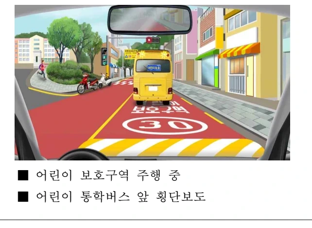

845. Дараах замын нөхцөлд хамгийн аюулгүй жолоодох үйлдэл аль 2 вэ?

- ①Урд талын хүүхдийн сургуулийн автобус зогсож болзошгүй тул аюулгүйн зай барина.
- ②Хурдаа бууруулбал арын автомашин мөргөж болзошгүй тул хүүхдийн сургуулийн автобусыг гүйцэж түрүүлнэ.
- ③Зүүн талын хүүхэд явган хүний гарц руу орж болзошгүй тул хүүхдийн хөдөлгөөнийг ажиглана.
- ④Урд зүүн талд түр зогссон болон зогсоолд тавьсан хоёр дугуйт тээврийн хэрэгсэлтэй мөргөлдөхөөс болгоомжлон, хүүхдийн сургуулийн автобусыг аажмаар гүйцэж түрүүлнэ.
- ⑤Урд талын хүүхдийн сургуулийн автобусанд хүүхдүүд сууж, бууж байгаа тул аажмаар гүйцэж түрүүлэн явна.
Хариулт харах
Зөв хариулт
① Урд талын хүүхдийн сургуулийн автобус зогсож болзошгүй тул аюулгүйн зай барина.
③ Зүүн талын хүүхэд явган хүний гарц руу орж болзошгүй тул хүүхдийн хөдөлгөөнийг ажиглана.
Үндэслэл
Хүүхэд хамгааллын бүсэд харагдахгүй газар аюул гарч болзошгүй тул аюулыг урьдчилан харж, бага хурдтай жолоодож, хүүхдийн санаанд оромгүй үйлдлээс болгоомжлох хэрэгтэй. ⑤ Хүүхдийн сургуулийн автобусны шар анивчдаг гэрлийг зам дээр зогсох, хаалт хаагдсан үед ашигладаг. (Автомашины болон автомашины эд ангиудын гүйцэтгэл, стандартын дүрмийн 48 дугаар зүйлийн 4 дэх хэсэг)
Үндэслэлийн текст нь машин орчуулга.